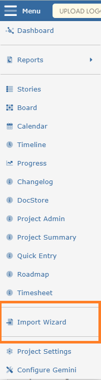
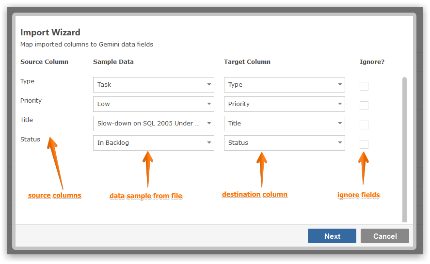
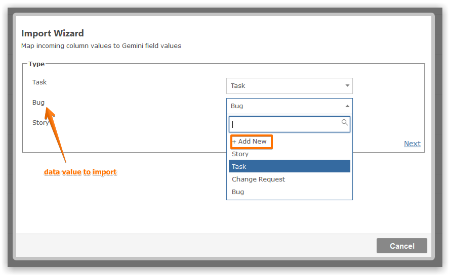

Data from other systems can be imported using the Import Wizard.
NoteUser permissions may prevent you from importing data.

You can choose to import from Microsoft Excel and CSV file formats (PIPE, COMMA or TAB delimited).
You choose which fields to import and what they map to. Optionally, you can also ignore certain fields and prevent them from being imported.

For every field value found in your import file you can map it to an existing value or add it during the import process.

Imported items will appear in the Items Grid.
Note The wizard import multiple comments for one issue by using the delimiter #!# but they have to be in one record with the item.
Note You can also import dependencies by mapping a coulmn to the Dependency field and entering either an existing item id or the row number in Rx format. R2 will be the item imported in the 2nd row of the file (1st row when you have headers).
Note In some cases you might receive an error message about folder permssions not setup. Please check that and the system log for more error details.